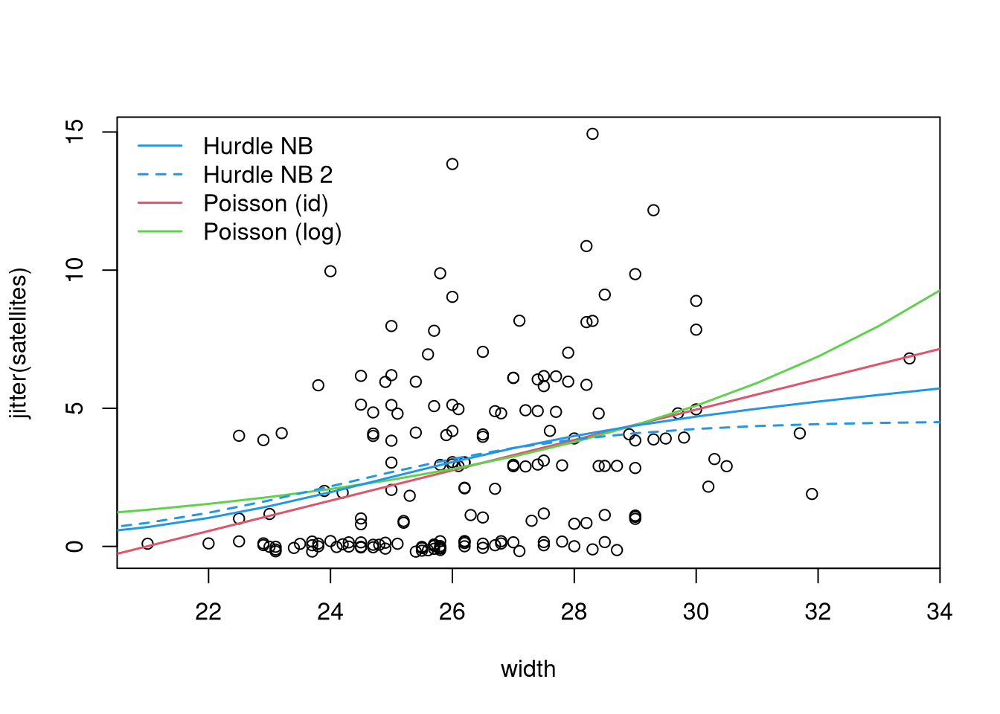

library("countreg")
## load data, use ordered factors as numeric, and
## grouped factor version of width
data("CrabSatellites", package = "countreg")
CrabSatellites <- transform(CrabSatellites,
color = as.numeric(color),
spine = as.numeric(spine),
cwidth = cut(width, c(-Inf, seq(23.25, 29.25), Inf))
)
## Agresti, Table 4.4
aggregate(CrabSatellites$satellites, list(CrabSatellites$cwidth), function(x)
round(c(Number = length(x), Sum = sum(x), Mean = mean(x), Var = var(x)), digits = 2)) Group.1 x.Number x.Sum x.Mean x.Var
1 (-Inf,23.2] 14.00 14.00 1.00 2.77
2 (23.2,24.2] 14.00 20.00 1.43 8.88
3 (24.2,25.2] 28.00 67.00 2.39 6.54
4 (25.2,26.2] 39.00 105.00 2.69 11.38
5 (26.2,27.2] 22.00 63.00 2.86 6.89
6 (27.2,28.2] 24.00 93.00 3.88 8.81
7 (28.2,29.2] 18.00 71.00 3.94 16.88
8 (29.2, Inf] 14.00 72.00 5.14 8.29## Agresti, Figure 4.4
plot(tapply(satellites, cwidth, mean) ~ tapply(width, cwidth, mean),
data = CrabSatellites, ylim = c(0, 6), pch = 19)## alternatively: exploratory displays for hurdle (= 0 vs. > 0) and counts (> 0)
par(mfrow = c(2, 2))
plot(factor(satellites == 0) ~ width, data = CrabSatellites, breaks = seq(20, 33.5, by = 1.5))
plot(factor(satellites == 0) ~ color, data = CrabSatellites, breaks = 1:5 - 0.5)
plot(jitter(satellites) ~ width, data = CrabSatellites, subset = satellites > 0, log = "y")
plot(jitter(satellites) ~ factor(color), data = CrabSatellites, subset = satellites > 0, log = "y")## count data models
cs_p <- glm(satellites ~ width + color, data = CrabSatellites, family = poisson)
cs_nb <- glm.nb(satellites ~ width + color, data = CrabSatellites)
cs_hp <- hurdle(satellites ~ width + color, data = CrabSatellites, dist = "poisson")
cs_hnb <- hurdle(satellites ~ width + color, data = CrabSatellites, dist = "negbin")
cs_hnb2 <- hurdle(satellites ~ 1 | width + color, data = CrabSatellites, dist = "negbin")
AIC(cs_p, cs_nb, cs_hp, cs_hnb, cs_hnb2) df AIC
cs_p 3 921.4990
cs_nb 4 756.9323
cs_hp 6 736.2160
cs_hnb 7 714.7255
cs_hnb2 5 712.0658BIC(cs_p, cs_nb, cs_hp, cs_hnb, cs_hnb2) df BIC
cs_p 3 930.9589
cs_nb 4 769.5455
cs_hp 6 755.1358
cs_hnb 7 736.7985
cs_hnb2 5 727.8323## rootograms
if(require("topmodels")) {
par(mfrow = c(2, 2))
r_p <- rootogram(cs_p, xlim = c(0, 15), main = "Poisson")
r_nb <- rootogram(cs_nb, xlim = c(0, 15), main = "Negative Binomial")
r_hp <- rootogram(cs_hp, xlim = c(0, 15), main = "Hurdle Poisson")
r_hnb <- rootogram(cs_hnb, xlim = c(0, 15), main = "Hurdle Negative Binomial")
}## fitted curves
par(mfrow = c(1, 1))
plot(jitter(satellites) ~ width, data = CrabSatellites)
nd <- data.frame(width = 20:34, color = 2)
pred <- function(m) predict(m, newdata = nd, type = "response")
cs_ag <- glm(satellites ~ width, data = CrabSatellites, family = poisson(link = "identity"),
start = coef(lm(satellites ~ width, data = CrabSatellites)))
lines(pred(cs_ag) ~ width, data = nd, col = 2, lwd = 1.5)
lines(pred(cs_p) ~ width, data = nd, col = 3, lwd = 1.5)
lines(pred(cs_hnb) ~ width, data = nd, col = 4, lwd = 1.5)
lines(pred(cs_hnb2) ~ width, data = nd, col = 4, lwd = 1.5, lty = 2)
legend("topleft", c("Hurdle NB", "Hurdle NB 2", "Poisson (id)", "Poisson (log)"),
col = c(4, 4, 2, 3), lty = c(1, 2, 1, 1), lwd = 1.5, bty = "n")
## alternative displays: Q-Q residuals plot, barplot, residuals vs. fitted
if(require("topmodels")) {
par(mfrow= c(3, 2))
qqrplot(cs_p, range = c(0.05, 0.95), main = "Q-Q residuals plot: Poisson")
qqrplot(cs_hnb, range = c(0.05, 0.95), main = "Q-Q residuals plot: Hurdle NB")
} else {
par(mfrow= c(2, 2))
}
barplot(t(matrix(c(r_p$observed, r_p$expected), ncol = 2,
dimnames = list(r_p$x, c("Observed", "Expected")))),
beside = TRUE, main = "Barplot: Poisson",
xlab = "satellites", ylab = "Frequency",
legend.text = TRUE, args.legend = list(x = "topright", bty = "n"))
barplot(t(matrix(c(r_hnb$observed, r_hnb$expected), ncol = 2,
dimnames = list(r_hnb$x, c("Observed", "Expected")))),
beside = TRUE, main = "Barplot: Hurdle NB",
xlab = "satellites", ylab = "Frequency",
legend.text = TRUE, args.legend = list(x = "topright", bty = "n"))
plot(predict(cs_p, type = "response"),
residuals(cs_p, type = "pearson"),
xlab = "Fitted values", ylab = "Pearson residuals",
main = "Residuals vs. fitted: Poisson")
plot(predict(cs_hnb, type = "response"),
residuals(cs_hnb, type = "pearson"),
xlab = "Fitted values", ylab = "Pearson residuals",
main = "Residuals vs. fitted: Hurdle NB")